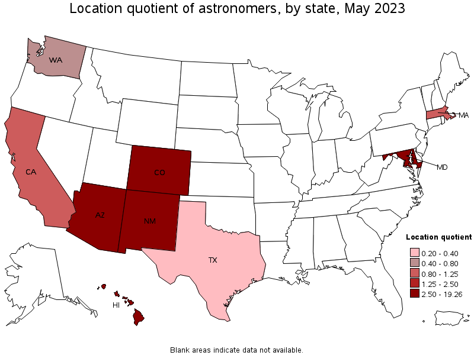

According to the Bureau of Labor Statistics in May 2023, the median annual wage of astronomers in the US was $127,930. The lowest 10% earned $56,500 or less, and the highest 10% earned $183,500 or more. Because astronomers often work for large public entities like universities or government organizations, they generally have good benefits.
Astronomy is a relatively low-demand job, with only 1,600 new jobs each year, but this is likely a result of the large barriers to entry, such as the necessity of a PhD. Astronomy is growing at a rate of at least 7% a year, with some estimates as high as 14%, making it an extremely fast-growing industry.
